NHỮNG THAY ĐỔI TRÊN BẢN ECUS5VNACCS 2018
(Phiên bản update 03/06/2023)
Phần mềm ECUS5VNACCS2018 - Ngày phát hành 20/06/2023
Phiên bản cập nhật ngày 03/06/2023 được phát hành ngày 20/06/2023 bổ sung, sửa đổi các chức năng sau:
- 1. Giữ nguyên Trị giá tính thuế (tự nhập) khi gọi IDB.
Đối với các dòng hàng F.O.C có Trị giá tính thuế do người dùng tự nhập, khi thực hiện gọi tờ khai bằng nghiệp vụ IDB, giá trị chỉ tiêu Trị giá tính thuế (tự nhập) sẽ vẫn được giữ nguyên, tránh trường hợp doanh nghiệp phải nhập lại. (Đối với hàng hóa F.O.C được xác định bởi bộ 3 chỉ tiêu: Đơn giá, mã nguyên tệ đơn giá và mã đơn vị tính đơn giá được để trống):
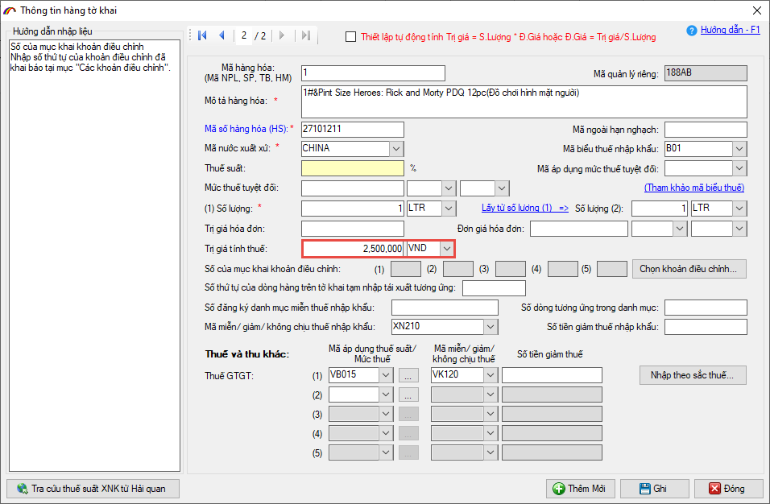
- 2. Sửa lại chuẩn làm tròn số liệu của danh mục Nguyên phụ liệu hợp đồng gia công
Hiện nay, tại ô số lượng đăng ký của danh mục Nguyên phụ liệu hợp đồng gia công, phần mềm đang tự làm tròn số lẻ thập phân, ví dụ: 10.63 được làm tròn thành 11.00. Bản update mới đã sửa lại để giữ đúng những số lẻ (10.63):
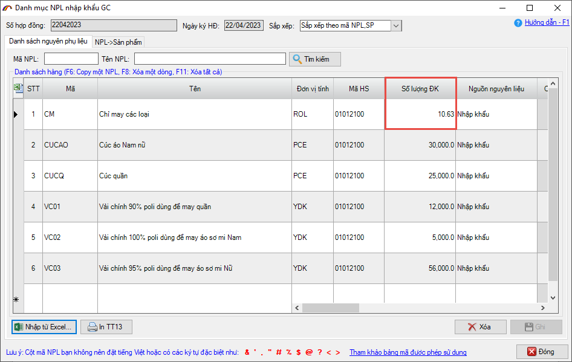
- 3. Hiển thị ghi chú khi in nhiều định mức:
Khi nhập định mức đối với các NPL chính, doanh nghiệp có nhập vào chỉ tiêu ghi chú và khi in từng định mức trên file excel vẫn hiển thị nội dung của ghi chú đã nhập. Nhưng khi dùng chức năng in nhiều định mức thì chỉ tiêu ghi chú lại không có. Bản update mới này đã sửa và cho hiển thị nội dung ghi chú khi in nhiều định mức:
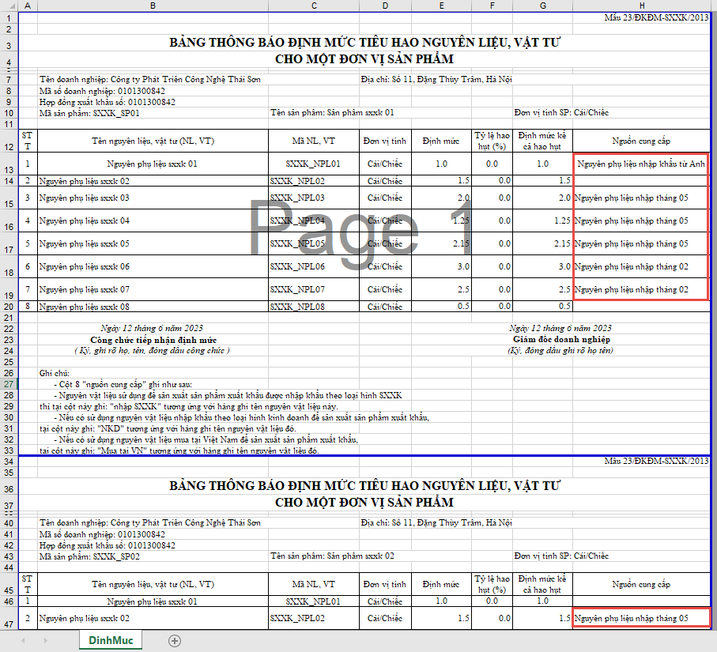
- 4. Chuẩn hóa đồng bộ độ dài của Tên hàng trên tờ khai AMA.
Chuẩn hóa đồng bộ lại độ dài tối đa cho phép của chỉ tiêu Tên hàng trên tờ khai AMA, đối với trường hợp nhập trên danh sách lưới và nhập chi tiết.
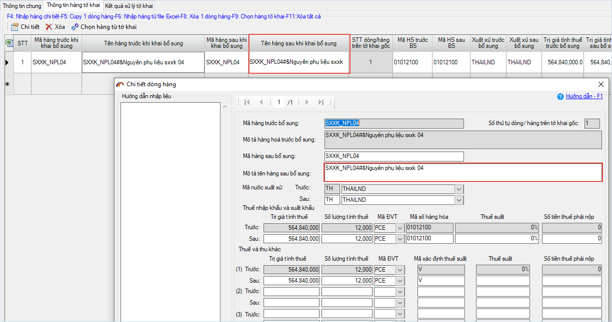
- 5. Bỏ thiết lập chỉ tiêu Tỷ lệ hao hụt khi nhập định mức từ file Excel.
Khi doanh nghiệp nhập định mức từ file excel (F6), phần mềm đã bỏ thiết lập chỉ tiêu tỉ lệ hao hụt:
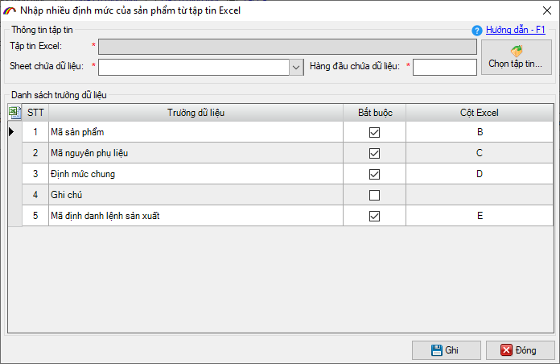
- 6. Băt buộc thiết lập chỉ tiêu Định danh LSX khi nhập định mức từ file Excel.
Khi doanh nghiệp nhập định mức từ file excel (F6), phần mềm đã bắt buộc thiết lập chỉ tiêu Định danh LSX, tránh trường hợp nhập được vào nhưng khai lên bị Hải quan từ chối, gây mất thời gian cho doanh nghiệp:
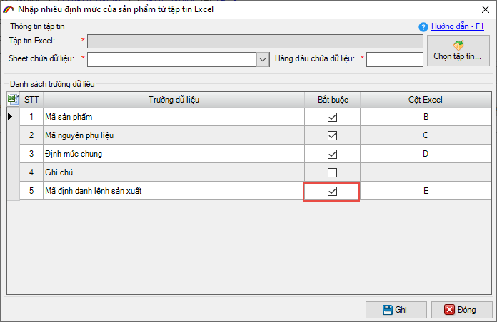
- 7. Cho phép cập nhật thông tin danh mục đã có từ file excel.
Khi đã có danh mục nguyên phụ liệu, sản phẩm...doanh nghiệp muốn cập nhật lại thông tin cho một số mã hàng (tên, đvt hoặc hs). Bản nâng cấp này, phần mềm cho phép người dùng thực hiện cập nhật thông tin bằng file excel.
Để thực hiện, doanh nghiệp truy nhập vào menu Tiện ích / Cập nhật thông tin danh mục:
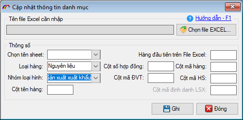
- 8. Bổ sung chức năng F11 - xóa tất cả dòng hàng cho danh mục NPL HĐGC.
Phần mềm bổ sung chức năng phím tắt F11 - Xóa tất cả trong danh sách Nguyên phụ liệu của HĐGC, cho phép người dùng xóa toàn bộ danh sách đang nhập mới để có thể import lại, tránh mất thời gian khi phát hiện sai sót và phải xóa thủ công từng mã như hiện nay:
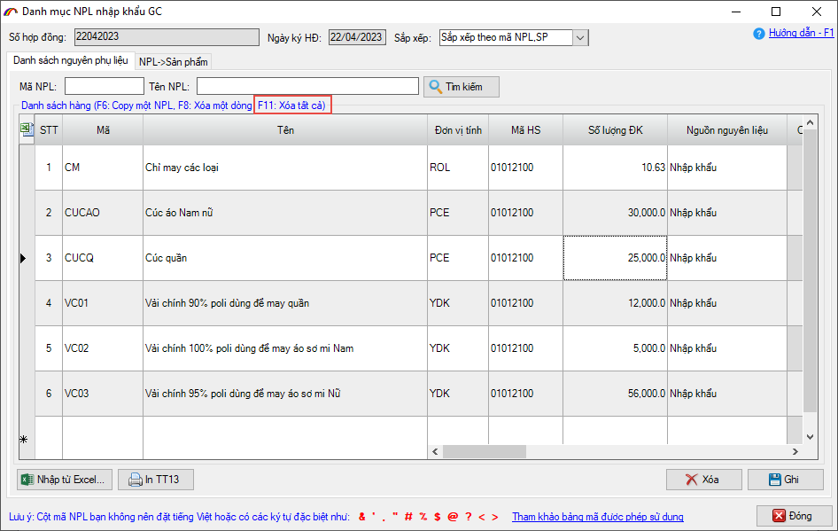
- 9. Bổ sung điều kiện tìm kiếm tờ khai theo Luồng.
Trong danh sách tờ khai hải quan, doanh nghiệp đã có thể tìm kiếm tờ khai theo luồng:
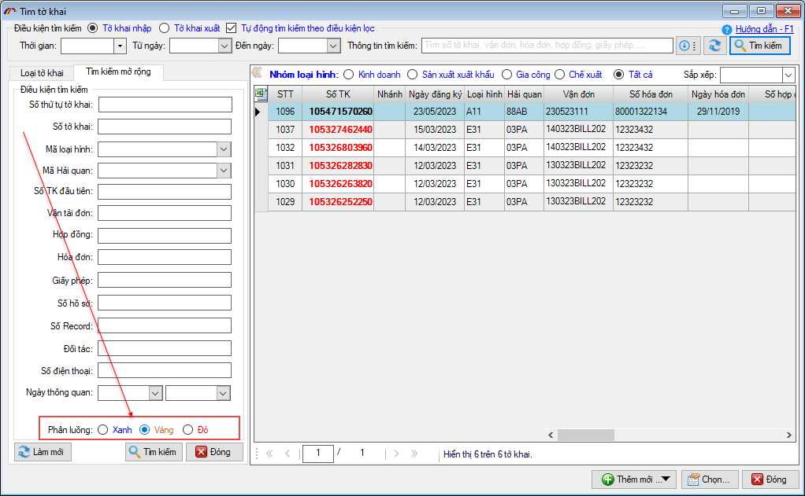
- 10. Sửa lỗi xảy ra khi lấy mã biểu thuế cho HS.
Nếu trong thông tin đăng ký sử dụng của doanh nghiệp có dấu & trong phần địa chỉ thì khi nhập HS cho dòng hàng và lấy biểu thuế sẽ hiện ra thông báo lỗi, bản update mới này đã được khắc phục:
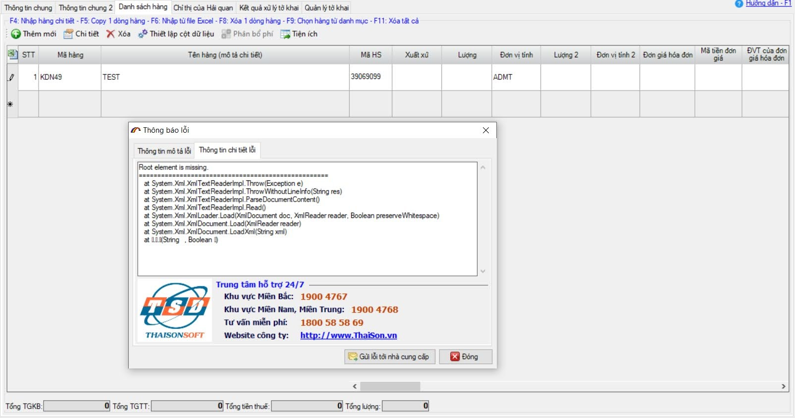
Sửa bổ sung các lỗi về khai báo thu phí.
- 1. Khắc phục tình trạng sử dụng CKS có MST khác để khai báo.
Trên hệ thống thu phí TP. HCM, khi doanh nghiệp sử dụng thiết bị CKS có MST khác với MST doanh nghiệp đang khai báo tờ khai nộp phí (đồng thời MST trên thiết bị CKS cũng không thuộc loại tài khoản đại lý) phần mềm sẽ chặn không cho khai báo :
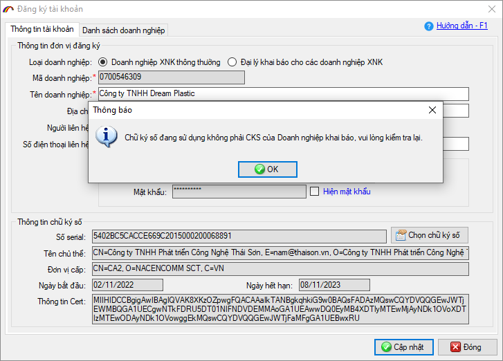
- 2. Thay đổi cơ chế khi đối với doanh nghiệp bị cưỡng chế.
Trên hệ thống thu phí TP. HCM, khi doanh nghiệp bị cưỡng chế và nhận được thông báo cưỡng chế từ phần mềm, đối với các doanh nghiệp có hình thức cưỡng chế là 5 - Cưỡng chế tất cả các trường hợp, sẽ không thể tiếp tục khai báo tờ khai nộp phí. Các hình thức cưỡng chế còn lại, doanh nghiệp vẫn tiếp tục khai báo được tờ khai nộp phí bình thường:
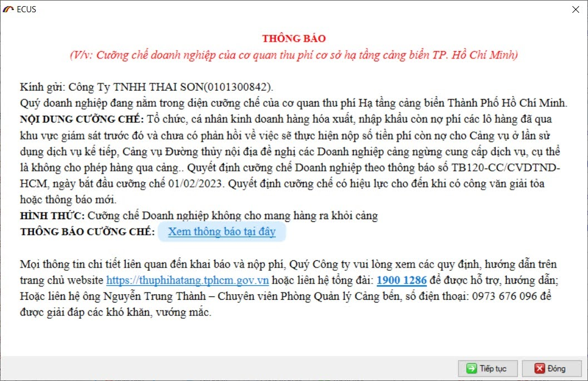
- Ngoài ra, còn có nhiều mục sửa đổi bổ sung khác nhằm nâng cao hiệu suất và tạo sự thuận lợi cho người dùng...
...
Bản quyền © thuộc về Công ty TNHH Phát triển công nghệ Thái Sơn